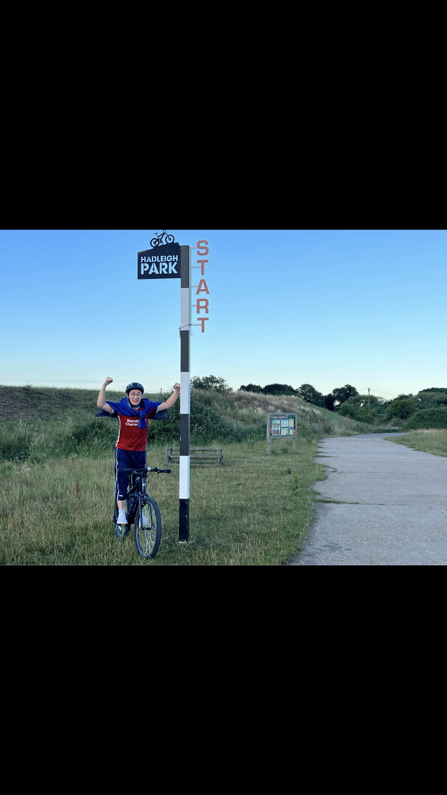
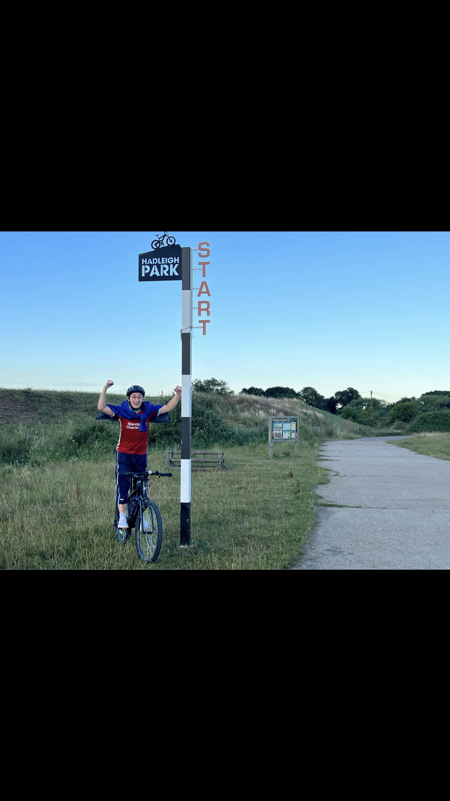

Who Am I?
Native of Myanmar (Burma)üá≤üá≤, born in a small town called Ahtaung(·Ä°·Äë·Ä±·Ä¨·ÄÑ·Ä∫).
I grew up in a family that runs fashion & garments business. At 14, I left my parents' house to attend high school in Yangon (Rangoon). Without even realizing what my passion is, I ended up joining med school. I never enjoyed it, but I graduated in 2012 and practiced medicine for five years until I joined my wife, who is in the UK working for the NHS as a Specialist Registrar.
ùóôùòÇùóª ùóôùóÆùó∞ùòÅùòÄ:
- Love ☕, üå≤, sports, technology, movies (TBBT/Sheldon's Fan), DIY, Maths & numbers; obsessed with car registration plates.
- üèÉ‚Äç‚ôÇÔ∏è Running (half marathon x2, 10k x1, fun run 5k x1)
- ü•æ Hiking (I am a member of Universities Of Medicine Myanmar Hiking and Mountaineering Team, have reached the summits of five 10,000+ft mountains üèîÔ∏è in Myanmar)
- üö¥ Cycling (in 2022, I taught my wife how to ride a bicycle at the age of 33)
- üßò‚Äç‚ôÇÔ∏è Yoga (training 100+ hours), üè∏ badminton (intermediate), and üèä‚Äç‚ôÄÔ∏è swimming (I can swim, yay üòÅ)
- ‚öΩÔ∏èFootball/soccer, a (die-hard)Liverpool FC fan since 1998, YNWA!!! üèÜ
- ***Last but not least, I built this website using my MacBook Air(2017), which I won as the 1st lucky draw prize from my local gym while I was in Myanmar.


 
